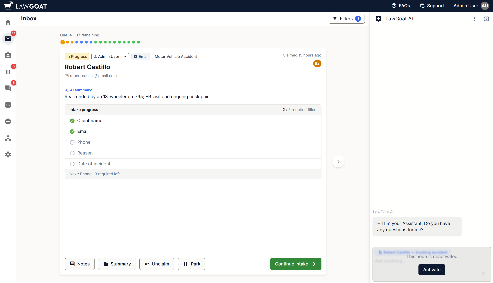

Attorneys don’t trust black boxes. LawGoat’s AI proves its work.

LawGoat is Belva’s AI platform for law firms. One workspace for talking to clients, reviewing documents, and killing the busywork in intake, scheduling, and case management.
I joined as the first product designer. There was no design team and no system yet, and engineering was already shipping UI I hadn't seen. I built the design language, the component library, and most of the production UI from scratch, then built the team around it.
Along the way I scrapped Figma for something faster: we mock in standalone HTML files with our actual codebase in context, so what ships looks like what we designed. Three pieces of that below.
A queue that tells you what's missing before you open the file.
Leads came in from everywhere: web forms, email, phone calls someone typed up after the fact. Whoever picked one up had to read the whole thread just to figure out what was even missing before they could act on it. So every lead now gets an AI-generated one-line summary up front, plus a live checklist of what's still missing: phone, reason, date of incident.
Claim it, work it, park it, or hand it off, and none of that context gets lost in the handoff. The required-field count travels with the lead, so the next person picks up exactly where the last one left off instead of starting over.

Earning trust from people paid to be skeptical.
Attorneys are professionally trained to doubt anything that can't show its work, and a generic chatbot would’ve gotten laughed out of the first demo. So every AI answer in LawGoat pulls its dates, providers, and documents straight from the case file, and every claim links back to a source document. No vague summaries.
The case summary view takes it further: a running analysis that splits Risks from Opportunities into plain, color-coded blocks. An attorney can size up exposure and leverage without re-reading the whole file.

The fastest way to ship a design system is to be the one writing the code.
A component library, in production from week one.
Engineering was already shipping UI before I got there, and there was no time carved out in the schedule to stop and fix it. Every day without a system was more inconsistency I'd have to clean up later. So I built one in flight: mocked components as standalone HTML with our actual codebase in context, then wired them into production HTMX and Tailwind with Claude inside Cursor. Same branch, same PR, same review as the feature work.
Design files and production code don't drift, because they're built the same way now. The library covers the basics (buttons, inputs, tables, modals, toasts) plus LawGoat-specific stuff: case cards, AI message blocks, document viewers. It's also the reason the intake queue and the AI chat above could ship as fast as they did, on the same foundation instead of each reinventing one.